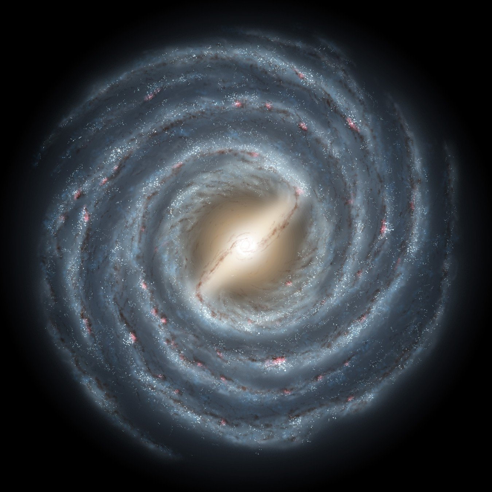

Косми́ческое простра́нство, ко́смос (др.-греч. κόσμος — «упорядоченность», «порядок») -
относительно пустые участки Вселенной, которые лежат вне границ атмосфер небесных тел.
Космос не является абсолютно пустым пространством:
в нём есть, хотя и с очень низкой плотностью, межзвёздное вещество (преимущественно молекулы водорода),
кислород в малых количествах (остаток после взрыва звезды),
космические лучи и электромагнитное излучение, а также гипотетическая тёмная материя.
12 апреля 1961 года произошло событие мирового масштаба –
в 9:07 по московскому времени с космодрома Байконур
стартовала ракета-носитель «Восток»,
которая впервые в истории доставила в космос корабль с человеком на борту.
Этим человеком был 27-летний голубоглазый и улыбчивый советский военный летчик Юрий Гагарин.

.jpeg)
.jpeg)
Млечный Путь (Галактика) — спиральная галактика, в которой находится Земля и Солнечная система.
Радиус звёздного диска Млечного Пути и радиус Галактики составляют 16 килопарсек.
Полная масса Галактики с учётом тёмной материи оценивается как 1—2⋅1012 M⊙.
В Млечном Пути находится от 100 до 400 миллиардов звёзд, а его светимость составляет 2⋅1010 L⊙.
По сравнению с другими спиральными галактиками Млечный Путь имеет довольно большую массу и высокую светимость.
Солнечная система расположена на расстоянии в 7,5—8,5 килопарсека от центра Галактики и движется вокруг него со скоростью 220 км/с.
Дата выпуска: 1983 Исполнитель: группа "Земляне"
Автор слов: Анатолий Поперечный Дата записи: 1983